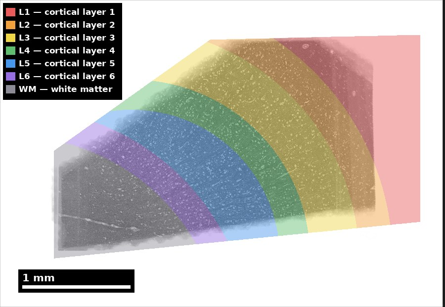
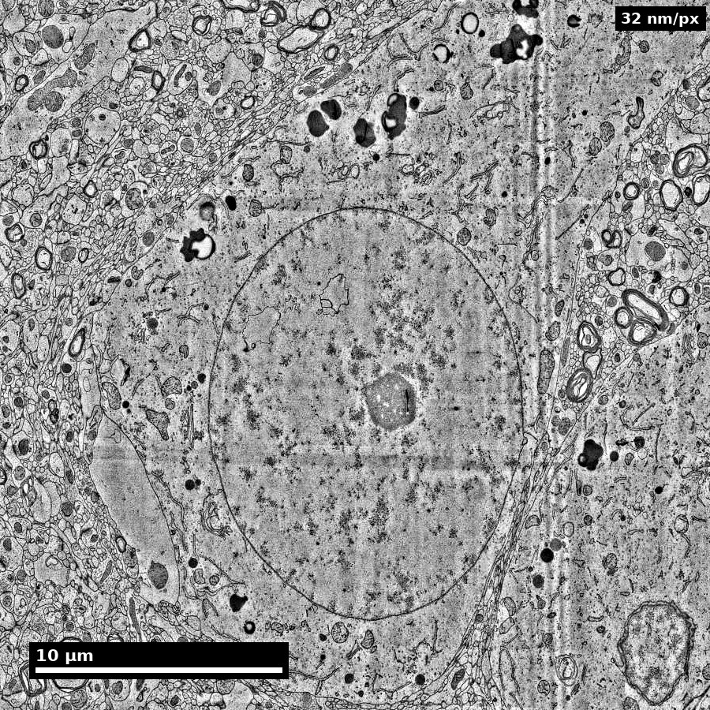

Slide 1 of 22
 NeuroTrailblazers · Module 04
NeuroTrailblazers · Module 04
Neuroanatomy for Connectomics
Teaching Deck
Human cortex · H01
Object segmentation over electron microscopy
H01 release · Lichtman Lab / Harvard & Connectomics at Google · CC BY 4.0
Shapson-Coe et al. (2024) · doi:10.1126/science.adk4858
Slide 2 of 22
Learning Objectives
- Identify major neuroanatomical compartments relevant to connectomics
- Relate anatomical context to interpretation of local EM structures
- Use region/layer context to avoid misclassification
- Communicate anatomy-based uncertainty clearly
Slide 3 of 22
Capability Target
Interpret a local EM region using correct anatomical context and document one confident and one uncertain structural call.
Slide 4 of 22
Concept Focus
1) Cortical layers shape what you see in EM
The mammalian neocortex is organized into six layers (L1-L6), each with a characteristic cell density, cell-type composition, and neuropil texture. In EM, these layers are distinguishable by:
- Layer 1: Sparse cell bodies (mostly interneurons and glia), dense neuropil of apical dendritic tufts, axonal boutons, and astrocytic processes. If you see neuropil with very few soma profiles, you are likely in L1.
Slide 5 of 22
Concept Focus (continued)
- Layer 2/3: Dense small-to-medium pyramidal neuron soma, heavily interconnected by local axon collaterals. The most densely packed neuronal layer.
- Layer 4: In sensory cortex, dominated by spiny stellate cells (not pyramidal) and thalamocortical axon terminals. Bouton density is high; dendritic spines are abundant.
- Layer 5: Large pyramidal cells (especially thick-tufted pyramidal neurons with soma up to 25 μm). If you see the largest soma profiles in the column, you are likely in L5.
Slide 6 of 22
Concept Focus (continued)
- Layer 6: Heterogeneous; corticothalamic pyramidal cells with distinctive morphology (apical dendrites reaching only to L4, not L1). Transition to white matter below.
Slide 7 of 22
Core Workflow
- Identify anatomical region/layer using soma density, cell-type signatures, and neuropil texture.
- Map candidate structures to known context (expected cell types, expected synapse types).
- Cross-check with neighboring slices — does the interpretation remain consistent across z?
- Annotate confidence and escalation path for ambiguous cases.
Slide 8 of 22
Run of Show (60 min)
- 00:00-10:00 | Macro-to-micro bridge
- 10:00-24:00 | Guided structural identification
- 24:00-38:00 | Ambiguity case discussion
- 38:00-50:00 | Learner annotation round
Figure description and teaching notes
Pre-class preparation (10-15 min async)
Review cortical layer descriptions above.
Explore the Allen Brain Atlas online viewer and locate cortical layers in a coronal section.
Bring one question: "How would I know which layer I'm looking at in EM?"
Minute-by-minute plan
00:00-10:00 | Macro-to-micro bridge
Instructor shows a light microscopy image of cortex (Nissl stain showing layers) side-by-side with the same region in EM.
Key teaching point: "The layers you learned in neuroanatomy class are the same layers you'll see in EM — but the visual cues are different. In EM, you identify layers by cell density and neuropil texture, not by staining color."
Walk through each layer's EM signature with real images from MICrONS or H01.
10:00-24:00 | Guided structural identification
Present 4 EM patches from different layers (unlabeled). Instructor demonstrates the identification process:
Patch A: sparse soma, dense neuropil → L1
Patch B: large pyramidal soma with thick apical dendrite → L5
Patch C: dense small soma, many spines → L2/3
Patch D: mossy fiber bouton (3 μm, packed vesicles) → hippocampus CA3
For each, articulate the evidence chain: "I see [features], which tells me [layer/region], which means I expect [cell types and synapse types]."
24:00-38:00 | Ambiguity case discussion
Present 3 ambiguous patches where layer context changes interpretation:
A large bouton near a blood vessel: thalamocortical (L4) or local collateral (L2/3)?
A smooth dendrite near a soma: inhibitory interneuron or astrocytic process?
A process at the volume boundary: cannot trace to soma — how to handle?
Group discussion: what additional evidence would resolve each ambiguity?
38:00-50:00 | Learner annotation round
Learners independently annotate 4 new patches, recording:
Estimated layer/region
Structure identification (cell type, compartment)
Confidence level (high/medium/low)
Evidence chain (which features support the call)
50:00-60:00 | Debrief and competency check
Review learner annotations as a group. Focus on:
Did layer context affect the classification?
Were confidence levels calibrated (not all "high")?
Were boundary/ambiguous cases handled with explicit uncertainty?
Exit ticket: "Name one anatomical cue that changed your interpretation today."
Slide 9 of 22
Run of Show (60 min) (continued)
- 50:00-60:00 | Debrief and competency check
Slide 10 of 22
Misconceptions to Watch
- Misconception guardrail: cortical layer can be read off a single EM patch without soma density or neuropil context.
- Misconception guardrail: the hippocampal laminar logic transfers to neocortex because both are cortex.
- Misconception guardrail: an atlas coordinate is a ground-truth location.
- Misconception guardrail: annotation confidence should be uniform across a volume.
Slide 11 of 22
Read location before interpreting a close-up
Start with the sample’s anatomical context.

Discuss: What context disappears when you zoom to one cell?
H01 release, Lichtman Lab / Harvard and Connectomics at Google; Shapson-Coe et al. (2024), doi:10.1126/science.adk4858; CC BY 4.0.
Figure description and teaching notes
Visual description and discussion guidance:
The image presents the released segmentation of layers L1 through L6 and white matter. The text legend supplements the colors. A small ultrastructure crop does not contain this location information; use dataset context rather than inferring a layer from one local profile.
Slide 12 of 22
Observe first; separate the interpretation
Compare the whole profile with its surroundings.

Discuss: Name one visible feature and one claim needing more context.
H01 release, Lichtman Lab / Harvard and Connectomics at Google; Shapson-Coe et al. (2024), doi:10.1126/science.adk4858; CC BY 4.0.
Figure description and teaching notes
Visual description and discussion guidance:
A large cell body with a prominent nucleus is visible among smaller profiles. This is an observation exercise, not a validated cell-type identification item. One section does not establish the cell’s full morphology or function.
Slide 13 of 22
Studio Activity
Scenario: You are given a set of 8 EM patches from a mouse cortex volume. The patches span different layers (L1 through L6) but are presented without layer labels.
Slide 14 of 22
Activity Output Checklist
- Evidence-linked artifact submitted.
- At least one limitation or uncertainty stated.
- Revision point captured from feedback.
Slide 15 of 22
Assessment Rubric
Minimum pass
- Context-aware call and confidence note recorded for every patch.
- Layer identification within ±1 layer for the majority of patches.
- At least one evidence chain written in the form "features observed, therefore layer, therefore expected structures."
Slide 16 of 22
Assessment Rubric
Strong performance
- Each call links at least two independent EM cues (soma density, neuropil texture, cell-type signature) to layer context.
- Confidence varies across patches in a calibrated way: boundary and volume-edge patches score lower than mid-layer patches.
- Cross-slice (z) evidence cited wherever a single-section call was ambiguous.
Slide 17 of 22
Assessment Rubric (continued)
- Partner disagreements resolved by naming which cue was decisive, not by splitting the difference.
Slide 18 of 22
Assessment Rubric
Common failure to flag
- Definitive call from a single feature without a layer or neighbor-slice check.
- Uniform "high" confidence across all patches, including boundary cases.
- Hippocampal and neocortical laminar logic applied interchangeably.
Slide 19 of 22
Exit Ticket
Describe one case where anatomy context changes your interpretation of an EM structure.
Slide 20 of 22
References (Instructor)
- Use module references listed on the module page.
Slide 21 of 22
Teaching Materials
- Module page: /modules/module04/
- Session kit: /teaching/sessions/module04/
- Worksheet: /assets/worksheets/module04/module04-activity.md
Slide 22 of 22
Read, review, or teach
The reading version includes figure descriptions and discussion guidance.
NeuroTrailblazers text: CC BY 4.0. Scientific figures retain their individual credits.